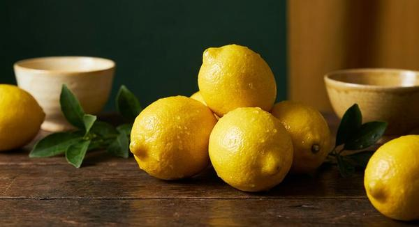

和柑橘ジン完全ガイド
使用銘柄106本を徹底比較

柚子と並んで、日本のクラフトジンを支えているのが地域固有の和柑橘です。シークヮーサー、へべす、甘夏、晩白柚、金柑、ブシュカン——これらは産地が限られるため、産地と銘柄が結びつきやすい、「地域が出る」ボタニカルでもあります。
本ページの銘柄は、Gin-DB掲載の全銘柄から公式情報で柑橘（柚子以外）の使用が確認できたもののみを抽出しています。最終更新：2026-08-29
柑橘（柚子以外）のジンを買う
このページの掲載銘柄のうち、国際コンテストの受賞歴があり、公式希望小売価格が確認できているものだけを載せています。編集部の主観による順位づけはしていません。掲載外の銘柄も、各銘柄ページから購入先を開けます。
光武酒造場（佐賀県）／ 45% ／ 700ml／200ml ／ ¥2,200（税別・公式希望小売価格）／200ml ¥800（税別）
ohoro GIN Limited Edition ニホンハッカ
ニセコ蒸溜所（北海道）／ 47% ／ 700ml ／ ¥5,000（税別・公式希望小売）
PR ／ アフィリエイトリンクを含みます。
1. 柑橘がジンの伝統的ボタニカルである理由
レモンピールやオレンジピールは、ジンの歴史の中で古くから使われてきた定番のボタニカルです。柑橘の皮に含まれるリモネンをはじめとする精油成分が、ジュニパーの硬い香りに明るさと立ち上がりの良さを与えます。
重要なのは、香りの多くが果肉ではなく皮（フラベド）に由来する点です。そのためジンでは果汁ではなくピール（皮）を使うのが一般的で、白い内皮（アルベド）は苦味の元になります。
2. 日本の地域柑橘という武器
シークヮーサー（沖縄）は酸が強く、独特の青い香りを持ちます。沖縄の蒸溜所が地域性を出す手段として採用しています。
へべす（宮崎県日向市）は皮が薄く果汁が多い品種として知られ、まろやかな酸が特徴です。晩白柚（熊本県八代地域）は非常に大きな果実で、厚い皮からとれる香りが使われます。
甘夏・タンカン・デコポン・金柑・ブシュカンなど、日本には地域ごとの柑橘が数多くあり、地元産の柑橘を使うことがそのままブランドの差別化要因になります。
3. 和柑橘ジンの飲み方
ジントニックが最も定番です。柑橘の香りはトニックの甘みと苦味の両方と相性が良く、失敗しにくい組み合わせです。
ソーダ割りでは柑橘の輪郭がよりはっきり出ます。銘柄ごとの柑橘の違いを比べたい場合はこちらが向いています。
同じ柑橘を搾って添えると香りが重なって強まりますが、別の柑橘を添えると香りが濁ることがあります。まずは何も添えずに素材を確認するのがおすすめです。
4. 柑橘（柚子以外）を使用しているクラフトジン 106銘柄
Gin-DB掲載の全銘柄から、公式情報で柑橘（柚子以外）の使用が確認できたもののみを抽出しています。度数・容量・価格は各蒸溜所の公式情報に基づき、確認できないものは「未確認」と表示しています。
柑橘（柚子以外）を使ったジンを数字で見る
地域の分布
アルコール度数の分布
度数を公式で確認できた100銘柄（106銘柄中）で数えています。
1. オーディナリー（オーディナリージン）
Motoki蒸研（京都府京都市上京区）
45% ／ 500ml／200ml／50ml ／ 500ml ¥4,950／200ml ¥2,640／50ml ¥880（税込・公式オンラインショップ）
yumarrestのシグネチャージン
2. KYOTO EBISU GIN
SiCX京都東山蒸溜所（京都府京都市東山区）
45% ／ 500ml ／ ¥4,980（税抜・公式）
3. SiCX KYOTO LEMON CITRIC ACID GIN
SiCX京都東山蒸溜所（京都府京都市東山区）
45% ／ 500ml ／ ¥3,980（税抜・公式）
4. 季の美 京都ドライジン
京都蒸溜所（京都府亀岡市（2025年10月に新設した生産拠点。創業地は京都市南区））
45.7% ／ 700ml ／ オープン価格
5. 京都ジン 輪廻 The Origin
大文字蒸溜所（京都府京都市左京区）
43% ／ 720ml／300ml ／ 720ml ¥5,060／300ml ¥2,640（税込・公式オンラインショップ、包装なし）
TWSC2026 ジン／ジャパニーズ 銅賞（TWSC2026結果PDFで確認）
6. 京都ジン 輪廻 In Bloom
大文字蒸溜所（京都府京都市左京区）
43% ／ 720ml／300ml ／ 720ml ¥6,160／300ml ¥3,190（税込・公式オンラインショップ、包装なし）
TWSC2026 ジン／ジャパニーズ 金賞（TWSC2026結果PDFで確認）
7. 京和漢 DRY GIN MOON OF KYOTO
森の京都蒸溜所（京都府福知山市）
45% ／ 700ml ／ ¥5,500（税込・公式）
8. 赤鳥居 オリジナル
光武酒造場（佐賀県鹿島市）
45% ／ 700ml／200ml ／ ¥2,200（税別・公式希望小売価格）／200ml ¥800（税別）
9. 赤鳥居 プレミアム
光武酒造場（佐賀県鹿島市）
45% ／ 700ml／200ml ／ ¥4,600（税別・公式希望小売価格）／200ml ¥1,300（税別）
10. 赤鳥居 ショコラ
光武酒造場（佐賀県鹿島市）
45% ／ 700ml／200ml ／ ¥2,900（税別・公式希望小売価格）／200ml ¥1,050（税別）
11. 赤鳥居 SAKE GIN
光武酒造場（佐賀県鹿島市）
45% ／ 700ml／200ml ／ ¥5,000（税別・公式希望小売価格）／200ml ¥1,500（税別）
12. スティルダムジン スタンダード（赤ラベル）
楠乃花蒸溜所（佐賀県佐賀市諸富町）
45% ／ 700ml ／ ¥4,500（税別・公式）
13. スティルダムジン リスボン（白ラベル）
楠乃花蒸溜所（佐賀県佐賀市諸富町）
45% ／ 700ml ／ ¥5,000（税別・公式）
14. 黄桜 クラフトジン 不知火（しらぬい）
黄桜 丹波蒸溜所（兵庫県丹波篠山市）
40% ／ 500ml ／ ¥3,500（税込・公式オンラインショップ、箱入り）／参考小売価格の記載なし
公式オンラインショップの商品名に「TWSC2025金賞受賞」と記載（TWSC2025公式結果のメダル区分は未照合。出品・受賞自体は本調査のTWSC受賞一覧でも確認）
15. ohoro GIN Standard
ニセコ蒸溜所（北海道虻田郡ニセコ町）
47% ／ 700ml ／ ¥4,500（税別・公式希望小売）
16. ohoro GIN Limited Edition ニホンハッカ
ニセコ蒸溜所（北海道虻田郡ニセコ町）
47% ／ 700ml ／ ¥5,000（税別・公式希望小売）
17. ohoro GIN Limited Edition ラベンダー
ニセコ蒸溜所（北海道虻田郡ニセコ町）
47% ／ 700ml ／ ¥5,000（税別・公式希望小売）
18. 明時（AKATOKI）TANZANITE（タンザナイト）
十勝平野蒸溜所（北海道中川郡幕別町）
47% ／ 500ml ／ ¥5,885（税込・化粧箱入り希望小売価格）／公式ショップ箱なし ¥5,500
数量限定品。TWSC2026 最高金賞
19. TAN・TAKA・TAN GIN（鍛高譚ジン）
合同酒精 旭川工場（北海道旭川市）
40% ／ 700ml ／ ¥3,520前後（税込・参考小売）
2025年2月リニューアルで37%→40%に変更
20. 9148 #0101 STANDARD
紅櫻蒸溜所（北海道札幌市南区）
45% ／ 700ml ／ ¥6,380（税込・公式オンライン）
21. 落葉松 ザ・ピンネシリ・クラフトジン
馬追蒸溜所（北海道夕張郡長沼町）
45% ／ 200ml ／ ¥2,900（税込・公式）
限定20本
22. RETROGRADE
鷹栖蒸溜所（北海道上川郡鷹栖町）
47% ／ 700ml ／ ¥5,500（税込・正規流通）
23. TATEYAMA GIN BLEND Series
TATEYAMA BREWING（千葉県館山市）
200ml ／ ¥2,200（税込）
24. TL Pearce Tokyo Dry Gin Classic
TL Pearce蒸溜所（千葉県野田市）
43% ／ 未確認 ／ 未確認
25. 槙 -KOZUE-
富士白蒸留所(中野BC)（和歌山県海南市）
47% ／ 700ml ／ ¥2,970（税込・公式）
26. 香立 -KODACHI-
富士白蒸留所(中野BC)（和歌山県海南市）
47% ／ 700ml ／ ¥2,970（税込・公式、箱なし）／箱入りは¥3,850（税込・公式）
27. OSAKA GIN ORIJIN
三國蒸溜所（大阪府大阪市東成区）
45% ／ 750ml ／ ¥5,500（税込・メーカー希望小売価格）
IWSC 2025 GOLD Outstanding（Classic / Traditional Gin部門・98点、蒸溜所公式ニュース）。ほか公式記載の受賞：Asia Spirits Challenge 2024 Gold、CWSA 2024 Gold ほか
28. 橘花 KIKKA GIN 澪標（みおつくし）
大和蒸溜所(油長酒造)（奈良県御所市）
45% ／ 500ml ／ ¥7,700（税込・公式）
ステンレスボトル限定1000本
29. ニッカ カフェジン
ニッカ宮城峡蒸溜所（宮城県仙台市青葉区）
47% ／ 700ml ／ ¥4,500（税別・参考小売価格・公式）
30. HITOKIWA Hebesu Peel
G.N.O Inc.（宮崎県宮崎市橘通東3丁目）
¥6,600（税込・公式）
現在売切
31. ジャパニーズ クラフト ジン マサハル（Japanese craft Gin MASAHARU）
やまや蒸留所（宮崎県西都市）
47% ／ 720ml／300ml ／ ¥3,850（720ml・税込・公式EC）／¥1,320（300ml・税込・公式EC）
Kura Master 2026 クラフト コウジ スピリッツ部門 金賞、IWSC2023 銀賞、TWSC2023 銀賞（グループ公式のお知らせで確認）
32. 油津吟（YUZU GIN）
京屋酒造（宮崎県日南市）
47% ／ 750ml ／ ¥5,500（税込・公式）
Mondo Selection 2018 最高金賞、TWSC 2019 金賞・ベストジャパニーズクラフトジン、TWSC殿堂入り
33. HINATA（ヒナタ）
京屋酒造（宮崎県日南市）
47% ／ 750ml ／ ¥5,500（税込・公式EC）
TWSC 2018 銀賞
34. OSUZU GIN Kumquat（金柑）
尾鈴山蒸留所（宮崎県児湯郡木城町）
45% ／ 700ml ／ ¥4,050（税抜・公式）
35. 銀鼠 -GINnez-
櫻の郷酒造（宮崎県日南市北郷町）
44% ／ 200ml ／ ¥990（税込・公式）
36. 青舞 OrB（オーガニッククラフトジン）
Neo Blue Distillery（山口県長門市油谷）
40% ／ 700ml ／ 市場実勢 約¥7,000〜
Gin Masters 2022 Ultra Premium部門 Master
37. 富士の神 開山
なだや富士山蒸溜所（山梨県富士吉田市）
45% ／ 500ml／200ml／30ml ／ 希望小売価格 ¥4,400（500ml）／¥2,420（200ml）※公式リリースに税込/税別の明記なし
2025年モンドセレクション 優秀品質金賞（Gold Quality Award）（蒸溜所公式お知らせ）。2023年10月12日販売開始
38. NAKATSU GIN（ドライジン）
中津川蒸留所（岐阜県中津川市）
50% ／ 500ml ／ ¥3,850（税込・公式）
39. NAKATSU GIN 南信州シトラス
中津川蒸留所（岐阜県中津川市）
50% ／ 500ml ／ ¥3,850（税込・公式）
限定シリーズ
40. クラフトジン岡山
岡山蒸溜所(宮下酒造)（岡山県岡山市中区）
50% ／ 700ml ／ ¥7,700（税込・公式）
41. GodSpirits -GIN FROM AMA 2026-（ゴッドスピリッツ）
Distillery Drift Mark（島根県隠岐郡海士町）
46% ／ 700ml／375ml ／ 700ml ¥6,000／375ml ¥3,850（税込・希望小売価格）
2026年9月16日発売の、海士町の自社蒸溜所で製造した新ラベル（製造年「2026」記載）。受賞歴（The Gin Masters 2025 Gold、The Feminalise 2026 Gold、TWSC2026 Silver、SFWSC2026 Silver）は本人PR記載だが、いずれも自社蒸溜所切替前（Whiskey&Co.の三島の蒸溜所で製造）のGodSpiritsに対するもの
42. クラフトジン瀬戸内 -檸檬-
SETOUCHI DISTILLERY（広島県呉市）
47% ／ 700ml ／ ¥2,420（税込・公式）
WGA 2025 Contemporary Style Gin Gold、TWSC 2022/2023/2024 金賞（殿堂入り）、フェミナリーズ 2022/2023/2024 金賞
43. クラフトジン瀬戸内 -甘夏-
SETOUCHI DISTILLERY（広島県呉市）
47% ／ 700ml ／ ¥2,750（税込・公式）
WGA 2025 Bronze、TWSC 2024 金賞、フェミナリーズ 2025 金賞
44. SAKURAO GIN ORIGINAL
サクラオB&D（広島県廿日市市）
47% ／ 700ml ／ ¥2,000（税別・公式参考小売価格）
45. 愛知クラフトジン キヨス
清洲桜醸造（愛知県清須市）
40% ／ 500ml ／ 公式オンラインで要確認
IWSC 2020 金賞95点、TWSC 2023 洋酒部門 銀賞
46. THE HERBALIST YASO GIN EXTRA HERB
越後薬草蒸留所（新潟県上越市）
45% ／ 700ml ／ ¥6,380（税込・公式）
47. Blue Rabbit Tokyo Dry Gin
Blue Rabbit Distillery（東京都大田区田園調布）
43% ／ 700ml ／ ¥5,950（税込・正規流通）
48. Extremely Lemony Gin
Blue Rabbit Distillery（東京都大田区田園調布）
700ml ／ ¥6,950（税込・公式EC）
49. Oahu Wanila Gin
Blue Rabbit Distillery（東京都大田区田園調布）
700ml ／ ¥9,900（公式）
旧掲載名「Hawaiian Vanilla Gin」は公式で確認できず、公式ストアに載っているこの銘柄に置き換えた（2026-09-20）
50. LAST ELYSIUM
東京リバーサイド蒸溜所（東京都台東区）
42% ／ 700ml ／ ¥3,850（税込・公式）
IWSC 2024 Gold
51. LAST EN -縁-
東京リバーサイド蒸溜所（東京都台東区）
41% ／ 700ml ／ ¥3,850（700ml・公式EC）
52. TOKYO HACHIO GIN CLASSIC
東京八王子蒸溜所（東京都八王子市）
45% ／ 500ml ／ ¥4,700（税込・公式EC、ギフト用化粧箱付。化粧箱無しの公式価格は掲載なし）
53. TOKYO HACHIO GIN ELDER FLOWER
東京八王子蒸溜所（東京都八王子市）
40% ／ 500ml ／ ¥4,500（税込・公式EC、ギフト用化粧箱付）
54. TOKYO HACHIO GIN ORIENTAL
東京八王子蒸溜所（東京都八王子市）
45% ／ 500ml ／ 未確認
季節限定
55. TOKYO SPICE GIN
東京八王子蒸溜所（東京都八王子市）
41% ／ 700ml ／ ¥5,775（税込・公式EC）
56. 日の丸ジン 蔵風土
東京蒸溜所(木内酒造)（東京都千代田区）
47% ／ 700ml ／ ¥3,850（税込・公式）
秋葉原店舗の主力ジン（八郷蒸溜所製）
57. 4周年ジン hosi
虎ノ門蒸留所（東京都港区）
50% ／ 500ml ／ ¥6,820（税込）
限定。公式に「完売次第終売」
58. ブラッドオレンジ
虎ノ門蒸留所（東京都港区）
51% ／ 500ml ／ ¥6,160（税込）
新作限定
59. レモンとすだち
虎ノ門蒸留所（東京都港区）
50% ／ 500ml ／ ¥6,160（税込）
限定
60. まさひろオキナワジン RECIPE 01
まさひろ酒造（沖縄県糸満市）
47% ／ 700ml ／ ¥3,520（税込・公式EC）
沖縄初のクラフトジン
61. まさひろオキナワジン RECIPE 02
まさひろ酒造（沖縄県糸満市）
47% ／ 700ml ／ ¥3,520（税込・公式EC）／¥3,200（税別）
62. ネイビーストレングス クラフトジン
石川酒造場（沖縄県中頭郡西原町）
57% ／ 500ml ／ ¥3,930（税込・公式直営）
TWSC 2021 金賞
63. 八代不知火蔵 八つ星 和柑橘
八代不知火蔵（熊本県八代市）
43% ／ 700ml ／ ¥3,850（税込・公式EC）
64. jin jin GIN
高田酒造場（熊本県球磨郡あさぎり町）
47% ／ 700ml ／ 市場実勢 約¥5,500（税込）
TWSC 2021 最高金賞
65. Kumamoto jin jin GIN
高田酒造場（熊本県球磨郡あさぎり町）
47% ／ 700ml ／ 未確認
66. Alembic Gin HACHIBAN
Alembic Distillery（石川県金沢市大野町）
47% ／ 500ml ／ ¥4,000（税込・公式発表の参考価格）
IWSC 2023 Gold Outstanding & Contemporary Gin部門 Trophy、SFWSC 2023 Double Gold
67. 森のジン 森庭
ぶどうの森蒸留所（MORI NO NIWA）（石川県金沢市）
43% ／ 480ml／240ml ／ ¥4,950（480ml）／¥2,640（240ml）（税込・公式）
ロット番号で味わいが変わる（公式ECの表記はA04）。同名のAlc.0%版も併売
68. 森のジン 薔薇
ぶどうの森蒸留所（MORI NO NIWA）（石川県金沢市）
43% ／ 480ml／240ml ／ ¥5,280（480ml）／¥2,860（240ml）（税込・公式）
公式ECの表記はA03
69. NUMBER EIGHT GIN - Yokohama Dry Gin
NUMBER EIGHT DISTILLERY（神奈川県横浜市中区）
46% ／ 700ml ／ ¥4,235（公式EC・税込/税別の表記なし）
TWSC 2019, 2020 シルバー
70. NUMBER EIGHT GIN Double botanical
NUMBER EIGHT DISTILLERY（神奈川県横浜市中区）
46% ／ ¥6,050（公式EC・税込/税別の表記なし）
71. BAY GIN（ベイジン）
横浜ジン蒸溜所（神奈川県横浜市中区）
47% ／ 700ml ／ ¥3,200（税抜・公式通販）
72. The Japanese Craft GIN 黄金井
黄金井酒造（神奈川県厚木市）
43% ／ 500ml ／ ¥5,280（税込・公式オンラインショップ）
TWSC 3年連続メダル受賞（2022 シルバーほか）
73. The Japanese Craft GIN 黄金井
黄金井酒造（神奈川県厚木市）
43% ／ 200ml ／ ¥2,200（税込・公式オンラインショップ）
74. 福岡ジン
リトルフラワー蒸留所（福岡県福岡市中央区）
43% ／ 500ml ／ ¥4,620（税込・希望小売価格）
2026年9月10日一般販売開始
75. KITAYA CRAFT GIN
喜多屋（福岡県八女市）
45% ／ 500ml ／ ¥4,400（税込・公式）
76. Jin40 - ASAKURA CRAFT GIN
朝倉蒸溜所(篠崎)（福岡県朝倉市）
45% ／ 750ml ／ ¥3,847（税込・公式EC）
77. Freeee!!! - ASAKURA CRAFT GIN
朝倉蒸溜所(篠崎)（福岡県朝倉市）
500ml ／ 未確認
売切表示
78. Freeee!!! Volume 2
朝倉蒸溜所(篠崎)（福岡県朝倉市）
500ml ／ ¥3,205（税込・公式EC）
79. クラフトジン ナイトトラベラー
山本酒造店（秋田県山本郡八峰町）
45% ／ 700ml ／ ¥4,400前後（税込・正規流通）
80. 秋田杉GIN
秋田県醗酵工業（秋田県湯沢市）
46% ／ 500ml ／ ¥3,463（税込・公式希望小売）
TWSC2021 ジャパニーズジン部門 最高金賞
81. 001 Gin
PLOW（茨城県猿島郡五霞町）
40% ／ 500ml ／ ¥3,500（税込・公式）
定番
82. 002 Herb Gin
PLOW（茨城県猿島郡五霞町）
40% ／ 500ml ／ ¥3,500（税込・公式）
定番
83. 005 Sauna Gin
PLOW（茨城県猿島郡五霞町）
40% ／ 500ml ／ ¥3,500（税込・公式）
定番
84. 037 SANSHO Gin
PLOW（茨城県猿島郡五霞町）
40% ／ 500ml ／ ¥4,000（税込・公式）
2026年6月発売（公式ショップ掲載日）
85. 日の丸ジン 蔵風土（くらふうど）
八郷蒸溜所(木内酒造)（茨城県石岡市）
47% ／ 700ml ／ ¥3,850（税込・公式）
86. ノエルのポーション（プレミアムクラフトジン）
明利酒類（茨城県水戸市）
40% ／ 720ml ／ ¥7,800（税込・公式）
87. 和GIN（プレミアムクラフトジン）
明利酒類（茨城県水戸市）
45% ／ 700ml ／ ¥3,850（税込・公式希望小売）
88. CLASSIC DRY GIN
野沢温泉蒸留所（長野県下高井郡野沢温泉村）
48% ／ 500ml ／ ¥4,850（税込・公式）
89. IWAI GIN
野沢温泉蒸留所（長野県下高井郡野沢温泉村）
42% ／ 500ml ／ ¥4,850（税込・公式）
90. 香の森（KANOMORI）
養命酒製造 駒ヶ根工場（長野県駒ヶ根市）
47% ／ 700ml ／ ¥5,192（税込・公式希望小売）
2026-09-20時点で養命酒の公式サイトの商品一覧に掲載が無い（終売の告知は未確認）
91. 山椒のGIN / Japanese Pepper
AGCT（静岡県静岡市駿河区）
42% ／ 500ml ／ ¥4,300（税込・公式EC）
TWSC 2026 金賞（出品名「No.01 山椒ジン」）。度数はTWSC出品記録より。うなぎ・和食との相性を公式が推す
92. Water Dragon Spirits（ウォータードラゴンスピリッツ）
Distillery Water Dragon（静岡県三島市）
47% ／ 700ml ／ ¥3,333（税込・公式）
蒸溜所公式の受賞歴：2025年 IWSC Bronze、TWSC Bronze、World Gin Awards Silver、Feminalise Gold／2024年 SFWSC Double Gold、SWSC Double Gold・Best of Class、IWSC Silver、HKIWSC Silver、Gin Masters Master、TWSC Bronze（部門名は公式に記載なし）
93. On Spring（オンスプリング）
Distillery Water Dragon（静岡県三島市）
43% ／ 375ml ／ ¥3,740（税込・公式）
蒸溜所公式の受賞歴：2025年 IWSC Gold、TWSC Bronze、Feminalise Silver／2024年 IWSC Gold、HKIWSC Gold、ISC Silver、SFWSC Silver、SWSC Silver、Gin Masters Master（部門名は公式に記載なし）。※TWSC2023にもOn Springの出品記録があり、蒸溜所のジン第1弾（2023年10月）より前の版は当蒸溜所製造か未確認
94. Teen Spirits（ティーンスピリッツ）
Distillery Water Dragon（静岡県三島市）
45% ／ 375ml ／ ¥3,537（税込・公式）
蒸溜所公式の受賞歴：2025年 IWSC Silver、TWSC Bronze、World Gin Awards Bronze、Feminalise Gold／2024年 ISC Bronze、IWSC Bronze、HKIWSC Bronze、Gin Masters Master（部門名は公式に記載なし）。※公式には2022年TWSC Silverの記載もあるが、Water Dragonのジン第1弾（2023年10月）より前のため当蒸溜所製造か未確認で除外
95. STANDARD CRAFT GIN
SEACLIFF 熱海蒸溜所（静岡県熱海市）
45% ／ 500ml／200ml ／ ¥5,400（500ml）／¥2,600（200ml）※公式EC表示・税込/税別の明記なし（化粧箱付きは別価格）
San Francisco World Spirits Competition 2026 Double Gold、London Spirits Competition 2025 Silver（蒸溜所公式）
96. 【PROUSE】ATAMI DRY GIN
SEACLIFF 熱海蒸溜所（静岡県熱海市）
45% ／ 500ml ／ ¥4,090（公式EC表示・税込/税別の明記なし）
業務用シリーズ。業務店からの仕入購入または蒸溜所での限定販売
97. LAZY MASTER ~Lushly Green~
沼津蒸留所（静岡県沼津市）
42% ／ 500ml ／ ¥4,610（公式サイト掲載価格・税込/税別の表記なし）
98. LAZY MASTER ~Smoky Gold~
沼津蒸留所（静岡県沼津市）
42% ／ 500ml ／ 市場実勢 約¥4,500
99. 夕凪GIN（JAPANESE CRAFT GIN）
西野金陵（香川県仲多度郡琴平町）
40% ／ 500ml ／ ¥3,850（税込・公式）
100. MAKINO GIN（マキノジン）
司牡丹酒造（高知県高岡郡佐川町）
45% ／ 700ml ／ ¥3,700（税込・公式）
IWSC 2024 銀賞
101. 千代むすびクラフト・ジン 因伯人（IMPACT）
千代むすび酒造（鳥取県境港市）
47% ／ 700ml ／ ¥3,080（税込・公式）／箱入り¥3,300（税込・公式）
GIN MASTERS 2024 Premium部門 MASTER
102. 白兎-HAKUTO-（マツイ ジン 白兎）
松井酒造（鳥取県倉吉市）
40% ／ 700ml ／ ¥1,496（税込・公式希望小売）
103. 和美人（Japanese GIN 和美人）
マルス津貫蒸溜所(本坊酒造)（鹿児島県南さつま市）
47% ／ 700ml ／ ¥4,400（税込・ギフト箱付）／¥4,180（ボトルのみ）
TWSC Best of the Best 2024、ISC 2024 Double Gold、SFWSC 2024 Gold
104. ジャパニーズクラフトジン 樹々（JUJU）
濵田酒造（鹿児島県いちき串木野市）
38% ／ 700ml ／ ¥2,201（税込・公式希望小売）
105. CRAFT GIN 尽〜tsukusu〜
西酒造（鹿児島県日置市吹上町）
47% ／ 720ml ／ ¥4,320（税込・2019年発売時の公式希望小売価格）
106. ORIGIN LEMON GIN
西酒造（鹿児島県日置市吹上町）
30% ／ 500ml ／ ¥6,160（税込・公式EC）
5. 106銘柄スペック比較表
| # | 銘柄 | 所在地 | 度数 | 価格 |
|---|---|---|---|---|
| 1 | オーディナリー（オーディナリージン） | 京都府 | 45% | 500ml ¥4,950／200ml ¥2,640／50ml ¥880（税込・公式オンラインショップ） |
| 2 | KYOTO EBISU GIN | 京都府 | 45% | ¥4,980（税抜・公式） |
| 3 | SiCX KYOTO LEMON CITRIC ACID GIN | 京都府 | 45% | ¥3,980（税抜・公式） |
| 4 | 季の美 京都ドライジン | 京都府 | 45.7% | オープン価格 |
| 5 | 京都ジン 輪廻 The Origin | 京都府 | 43% | 720ml ¥5,060／300ml ¥2,640（税込・公式オンラインショップ、包装なし） |
| 6 | 京都ジン 輪廻 In Bloom | 京都府 | 43% | 720ml ¥6,160／300ml ¥3,190（税込・公式オンラインショップ、包装なし） |
| 7 | 京和漢 DRY GIN MOON OF KYOTO | 京都府 | 45% | ¥5,500（税込・公式） |
| 8 | 赤鳥居 オリジナル | 佐賀県 | 45% | ¥2,200（税別・公式希望小売価格）／200ml ¥800（税別） |
| 9 | 赤鳥居 プレミアム | 佐賀県 | 45% | ¥4,600（税別・公式希望小売価格）／200ml ¥1,300（税別） |
| 10 | 赤鳥居 ショコラ | 佐賀県 | 45% | ¥2,900（税別・公式希望小売価格）／200ml ¥1,050（税別） |
| 11 | 赤鳥居 SAKE GIN | 佐賀県 | 45% | ¥5,000（税別・公式希望小売価格）／200ml ¥1,500（税別） |
| 12 | スティルダムジン スタンダード（赤ラベル） | 佐賀県 | 45% | ¥4,500（税別・公式） |
| 13 | スティルダムジン リスボン（白ラベル） | 佐賀県 | 45% | ¥5,000（税別・公式） |
| 14 | 黄桜 クラフトジン 不知火（しらぬい） | 兵庫県 | 40% | ¥3,500（税込・公式オンラインショップ、箱入り）／参考小売価格の記載なし |
| 15 | ohoro GIN Standard | 北海道 | 47% | ¥4,500（税別・公式希望小売） |
| 16 | ohoro GIN Limited Edition ニホンハッカ | 北海道 | 47% | ¥5,000（税別・公式希望小売） |
| 17 | ohoro GIN Limited Edition ラベンダー | 北海道 | 47% | ¥5,000（税別・公式希望小売） |
| 18 | 明時（AKATOKI）TANZANITE（タンザナイト） | 北海道 | 47% | ¥5,885（税込・化粧箱入り希望小売価格）／公式ショップ箱なし ¥5,500 |
| 19 | TAN・TAKA・TAN GIN（鍛高譚ジン） | 北海道 | 40% | ¥3,520前後（税込・参考小売） |
| 20 | 9148 #0101 STANDARD | 北海道 | 45% | ¥6,380（税込・公式オンライン） |
| 21 | 落葉松 ザ・ピンネシリ・クラフトジン | 北海道 | 45% | ¥2,900（税込・公式） |
| 22 | RETROGRADE | 北海道 | 47% | ¥5,500（税込・正規流通） |
| 23 | TATEYAMA GIN BLEND Series | 千葉県 | 未確認 | ¥2,200（税込） |
| 24 | TL Pearce Tokyo Dry Gin Classic | 千葉県 | 43% | 未確認 |
| 25 | 槙 -KOZUE- | 和歌山県 | 47% | ¥2,970（税込・公式） |
| 26 | 香立 -KODACHI- | 和歌山県 | 47% | ¥2,970（税込・公式、箱なし）／箱入りは¥3,850（税込・公式） |
| 27 | OSAKA GIN ORIJIN | 大阪府 | 45% | ¥5,500（税込・メーカー希望小売価格） |
| 28 | 橘花 KIKKA GIN 澪標（みおつくし） | 奈良県 | 45% | ¥7,700（税込・公式） |
| 29 | ニッカ カフェジン | 宮城県 | 47% | ¥4,500（税別・参考小売価格・公式） |
| 30 | HITOKIWA Hebesu Peel | 宮崎県 | 未確認 | ¥6,600（税込・公式） |
| 31 | ジャパニーズ クラフト ジン マサハル（Japanese craft Gin MASAHARU） | 宮崎県 | 47% | ¥3,850（720ml・税込・公式EC）／¥1,320（300ml・税込・公式EC） |
| 32 | 油津吟（YUZU GIN） | 宮崎県 | 47% | ¥5,500（税込・公式） |
| 33 | HINATA（ヒナタ） | 宮崎県 | 47% | ¥5,500（税込・公式EC） |
| 34 | OSUZU GIN Kumquat（金柑） | 宮崎県 | 45% | ¥4,050（税抜・公式） |
| 35 | 銀鼠 -GINnez- | 宮崎県 | 44% | ¥990（税込・公式） |
| 36 | 青舞 OrB（オーガニッククラフトジン） | 山口県 | 40% | 市場実勢 約¥7,000〜 |
| 37 | 富士の神 開山 | 山梨県 | 45% | 希望小売価格 ¥4,400（500ml）／¥2,420（200ml）※公式リリースに税込/税別の明記なし |
| 38 | NAKATSU GIN（ドライジン） | 岐阜県 | 50% | ¥3,850（税込・公式） |
| 39 | NAKATSU GIN 南信州シトラス | 岐阜県 | 50% | ¥3,850（税込・公式） |
| 40 | クラフトジン岡山 | 岡山県 | 50% | ¥7,700（税込・公式） |
| 41 | GodSpirits -GIN FROM AMA 2026-（ゴッドスピリッツ） | 島根県 | 46% | 700ml ¥6,000／375ml ¥3,850（税込・希望小売価格） |
| 42 | クラフトジン瀬戸内 -檸檬- | 広島県 | 47% | ¥2,420（税込・公式） |
| 43 | クラフトジン瀬戸内 -甘夏- | 広島県 | 47% | ¥2,750（税込・公式） |
| 44 | SAKURAO GIN ORIGINAL | 広島県 | 47% | ¥2,000（税別・公式参考小売価格） |
| 45 | 愛知クラフトジン キヨス | 愛知県 | 40% | 公式オンラインで要確認 |
| 46 | THE HERBALIST YASO GIN EXTRA HERB | 新潟県 | 45% | ¥6,380（税込・公式） |
| 47 | Blue Rabbit Tokyo Dry Gin | 東京都 | 43% | ¥5,950（税込・正規流通） |
| 48 | Extremely Lemony Gin | 東京都 | 未確認 | ¥6,950（税込・公式EC） |
| 49 | Oahu Wanila Gin | 東京都 | 未確認 | ¥9,900（公式） |
| 50 | LAST ELYSIUM | 東京都 | 42% | ¥3,850（税込・公式） |
| 51 | LAST EN -縁- | 東京都 | 41% | ¥3,850（700ml・公式EC） |
| 52 | TOKYO HACHIO GIN CLASSIC | 東京都 | 45% | ¥4,700（税込・公式EC、ギフト用化粧箱付。化粧箱無しの公式価格は掲載なし） |
| 53 | TOKYO HACHIO GIN ELDER FLOWER | 東京都 | 40% | ¥4,500（税込・公式EC、ギフト用化粧箱付） |
| 54 | TOKYO HACHIO GIN ORIENTAL | 東京都 | 45% | 未確認 |
| 55 | TOKYO SPICE GIN | 東京都 | 41% | ¥5,775（税込・公式EC） |
| 56 | 日の丸ジン 蔵風土 | 東京都 | 47% | ¥3,850（税込・公式） |
| 57 | 4周年ジン hosi | 東京都 | 50% | ¥6,820（税込） |
| 58 | ブラッドオレンジ | 東京都 | 51% | ¥6,160（税込） |
| 59 | レモンとすだち | 東京都 | 50% | ¥6,160（税込） |
| 60 | まさひろオキナワジン RECIPE 01 | 沖縄県 | 47% | ¥3,520（税込・公式EC） |
| 61 | まさひろオキナワジン RECIPE 02 | 沖縄県 | 47% | ¥3,520（税込・公式EC）／¥3,200（税別） |
| 62 | ネイビーストレングス クラフトジン | 沖縄県 | 57% | ¥3,930（税込・公式直営） |
| 63 | 八代不知火蔵 八つ星 和柑橘 | 熊本県 | 43% | ¥3,850（税込・公式EC） |
| 64 | jin jin GIN | 熊本県 | 47% | 市場実勢 約¥5,500（税込） |
| 65 | Kumamoto jin jin GIN | 熊本県 | 47% | 未確認 |
| 66 | Alembic Gin HACHIBAN | 石川県 | 47% | ¥4,000（税込・公式発表の参考価格） |
| 67 | 森のジン 森庭 | 石川県 | 43% | ¥4,950（480ml）／¥2,640（240ml）（税込・公式） |
| 68 | 森のジン 薔薇 | 石川県 | 43% | ¥5,280（480ml）／¥2,860（240ml）（税込・公式） |
| 69 | NUMBER EIGHT GIN - Yokohama Dry Gin | 神奈川県 | 46% | ¥4,235（公式EC・税込/税別の表記なし） |
| 70 | NUMBER EIGHT GIN Double botanical | 神奈川県 | 46% | ¥6,050（公式EC・税込/税別の表記なし） |
| 71 | BAY GIN（ベイジン） | 神奈川県 | 47% | ¥3,200（税抜・公式通販） |
| 72 | The Japanese Craft GIN 黄金井 | 神奈川県 | 43% | ¥5,280（税込・公式オンラインショップ） |
| 73 | The Japanese Craft GIN 黄金井 | 神奈川県 | 43% | ¥2,200（税込・公式オンラインショップ） |
| 74 | 福岡ジン | 福岡県 | 43% | ¥4,620（税込・希望小売価格） |
| 75 | KITAYA CRAFT GIN | 福岡県 | 45% | ¥4,400（税込・公式） |
| 76 | Jin40 - ASAKURA CRAFT GIN | 福岡県 | 45% | ¥3,847（税込・公式EC） |
| 77 | Freeee!!! - ASAKURA CRAFT GIN | 福岡県 | 未確認 | 未確認 |
| 78 | Freeee!!! Volume 2 | 福岡県 | 未確認 | ¥3,205（税込・公式EC） |
| 79 | クラフトジン ナイトトラベラー | 秋田県 | 45% | ¥4,400前後（税込・正規流通） |
| 80 | 秋田杉GIN | 秋田県 | 46% | ¥3,463（税込・公式希望小売） |
| 81 | 001 Gin | 茨城県 | 40% | ¥3,500（税込・公式） |
| 82 | 002 Herb Gin | 茨城県 | 40% | ¥3,500（税込・公式） |
| 83 | 005 Sauna Gin | 茨城県 | 40% | ¥3,500（税込・公式） |
| 84 | 037 SANSHO Gin | 茨城県 | 40% | ¥4,000（税込・公式） |
| 85 | 日の丸ジン 蔵風土（くらふうど） | 茨城県 | 47% | ¥3,850（税込・公式） |
| 86 | ノエルのポーション（プレミアムクラフトジン） | 茨城県 | 40% | ¥7,800（税込・公式） |
| 87 | 和GIN（プレミアムクラフトジン） | 茨城県 | 45% | ¥3,850（税込・公式希望小売） |
| 88 | CLASSIC DRY GIN | 長野県 | 48% | ¥4,850（税込・公式） |
| 89 | IWAI GIN | 長野県 | 42% | ¥4,850（税込・公式） |
| 90 | 香の森（KANOMORI） | 長野県 | 47% | ¥5,192（税込・公式希望小売） |
| 91 | 山椒のGIN / Japanese Pepper | 静岡県 | 42% | ¥4,300（税込・公式EC） |
| 92 | Water Dragon Spirits（ウォータードラゴンスピリッツ） | 静岡県 | 47% | ¥3,333（税込・公式） |
| 93 | On Spring（オンスプリング） | 静岡県 | 43% | ¥3,740（税込・公式） |
| 94 | Teen Spirits（ティーンスピリッツ） | 静岡県 | 45% | ¥3,537（税込・公式） |
| 95 | STANDARD CRAFT GIN | 静岡県 | 45% | ¥5,400（500ml）／¥2,600（200ml）※公式EC表示・税込/税別の明記なし（化粧箱付きは別価格） |
| 96 | 【PROUSE】ATAMI DRY GIN | 静岡県 | 45% | ¥4,090（公式EC表示・税込/税別の明記なし） |
| 97 | LAZY MASTER ~Lushly Green~ | 静岡県 | 42% | ¥4,610（公式サイト掲載価格・税込/税別の表記なし） |
| 98 | LAZY MASTER ~Smoky Gold~ | 静岡県 | 42% | 市場実勢 約¥4,500 |
| 99 | 夕凪GIN（JAPANESE CRAFT GIN） | 香川県 | 40% | ¥3,850（税込・公式） |
| 100 | MAKINO GIN（マキノジン） | 高知県 | 45% | ¥3,700（税込・公式） |
| 101 | 千代むすびクラフト・ジン 因伯人（IMPACT） | 鳥取県 | 47% | ¥3,080（税込・公式）／箱入り¥3,300（税込・公式） |
| 102 | 白兎-HAKUTO-（マツイ ジン 白兎） | 鳥取県 | 40% | ¥1,496（税込・公式希望小売） |
| 103 | 和美人（Japanese GIN 和美人） | 鹿児島県 | 47% | ¥4,400（税込・ギフト箱付）／¥4,180（ボトルのみ） |
| 104 | ジャパニーズクラフトジン 樹々（JUJU） | 鹿児島県 | 38% | ¥2,201（税込・公式希望小売） |
| 105 | CRAFT GIN 尽〜tsukusu〜 | 鹿児島県 | 47% | ¥4,320（税込・2019年発売時の公式希望小売価格） |
| 106 | ORIGIN LEMON GIN | 鹿児島県 | 30% | ¥6,160（税込・公式EC） |
6. よくある質問（FAQ）
Q. 柚子を使ったジンはこのページに載っていますか？
A. 柚子は使用銘柄が多く独立した解説が必要なため、別途「柚子ジン完全ガイド」にまとめています。本ページは柚子以外の柑橘を使用している銘柄が中心です（柚子と併用している銘柄は両方に掲載されます）。
Q. 果汁ではなく皮を使うのはなぜですか？
A. 柑橘の香り成分の多くは果肉ではなく皮に含まれているためです。果汁を加えると香りより酸味と糖が前に出てしまい、蒸留酒であるジンの設計から外れやすくなります。